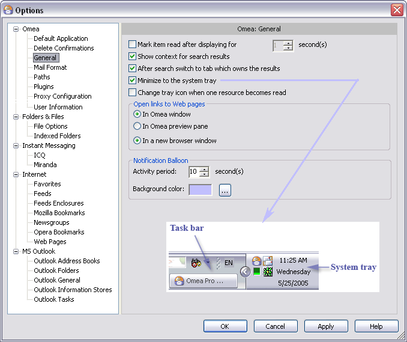

General
You can access this option from the Main menu: Tools | Options: Omea: General
This category provides a number of general options that control what Omea ReaderOmea Pro does in a number of situations which are described in this topic.

Omea General options in the Options Dialog
Options
Mark Item as Read after Displaying for n Seconds
This option affects:
- E-mail messages
- Newsgroup articles
- Feed postings
- Bookmarked web pages
When this option is checked, then whenever you select one of the above items in the relevant Resource List, the item will be marked as read after the number of seconds specified in the Seconds box.
Show Context for Search Results
When checked, Omea ReaderOmea Pro adds a column named Context to the Resource List in all search results Views. The column provides information about the context of each found resource in the View.
Checking this item may slow down the speed of some searches to some degree.
Open Links in a New Browser Window
Applies to links to Web pages. When this options is checked, links to Web pages will open in a new window of your computer’s default Web browser, rather than in Omea Reader’sOmea’s internal browser. Links may occur in e-mail, instant messages, news articles, or Web pages.
Minimize to the System Tray
When checked, Omea ReaderOmea Pro will minimize to an icon in the Windows system tray. When unchecked, it minimizes to the Windows task bar.
Change Tray Icon When One Resource Becomes Read
Tray Icon Rules will help you to stay up to date when a new resource specified in the tray icon rule condition arrives. When the rule criteria are met, Omea's icon changes to the icon which you have specified for this rule (see picture).
This option controls the behavior of tray icons which you have selected in tray icon rules. When checked, Omea Reader'sOmea Pro's tray icon specified in tray icon rules will change when you have read (and/or marked as Read) at least one resource which is specified as condition in the tray icon rule to the different tray icon (if you have more than one tray icon rules; you can change the order of the tray icon rules in Manage Rules dialog) or to usual Omea's icon when all tray icon rules have been applied.
After Search Switch to Tab Which Owns the Results
If you check this option and run either Basic or Advanced Search, and your search returns resources of one type and the resource is in the resource tab different from the one you work with at the moment, Omea will “switch” you to that tab automatically.
Open Links to Web Pages
This group of options allows you to specify how you want Omea to open the web links to which you navigate (i.e. follow some link in a newsgroup article, feed post, or any other resource type) in it.
In Omea Window
If you select this option, the web pages, to which you navigate, are going to open and take Omea's Items List and Preview pane. This mode will allow you to comfortably see the page without need to switch from Omea to external browsers. To return back to the Items List, use Back button located on the resource toolbar.
In Omea Preview Pane
If you select this option, the web pages are going to open in Omea's Preview pane (which is can now be located at the bottom and on the right) and it will not take the entire Omea's window. You may find it useful when you want to keep the Items List at hand and view the web pages at once.
In a New Browser Window
If you select this option, all web links to which you navigate using Omea will open in a new window of the default browser which is set in your system.
Notification Balloon
This group of options allows you to select the color and duration of displaying the alert balloon appearing in the lower-left corner of your screen.
Activity Period
This option allows you to specify for how long the alert is displayed in the lower-right corner of your screen. Use the spinner to select the number of seconds to display the alert balloon.
Background Color
Click the to open the Color dialog and select a different color for all notification balloons.